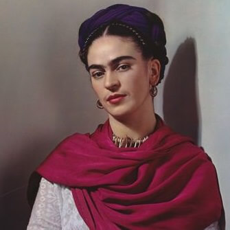
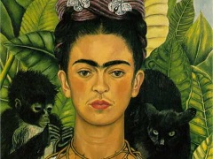
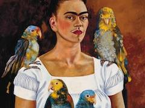
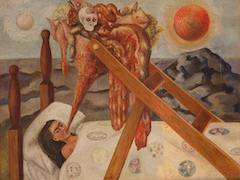
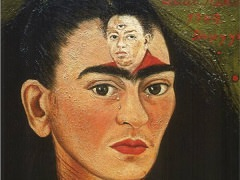

Frida Kahlo
1907-1954
Mexican artist Frida Kahlo is remembered for her self-portraits, pain and passion, and bold, vibrant colors. She is celebrated in Mexico for her attention to Mexican and indigenous culture and by feminists for her depiction of the female experience and form.
Some of her paintings




